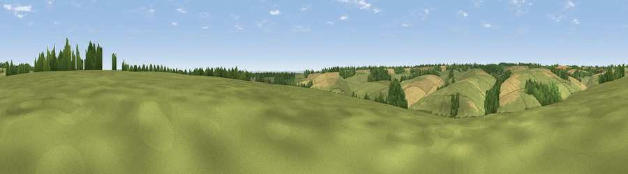

Viewpoint near Turkdean
#35705 in England · top 71% of its area beats it · near TurkdeanWhere it is
The exact computed spot (SP 10125 18325). Click the marker for map links.
The view, rendered

A 360° render of this exact spot computed from the terrain model, tree cover and land cover — summer colours, afternoon light, calibrated against photographs of famous viewpoints. Real trees, hedges and buildings will differ in detail.
The panorama
Grey silhouette: terrain skyline in each direction (720 bearings, Earth curvature and refraction included). Dashed green: skyline with trees (+15 m) and buildings (+8 m) as obstacles. Blue strip: how far the ground is visible on each bearing.
Where the view opens
Wedge length = distance to the farthest visible ground on that bearing (vegetation-aware). Rings at 10, 25 and 50 km.
What fills the view
70% grassland · 19% cropland · 12% woodland
Angular shares of the visible panorama (visual magnitude), not map area. Landscape diversity 0.36 (0–1 Shannon).
Key numbers
More beautiful places nearby
The staircase of upgrades: each row has a higher view potential than everything closer. Driving times are estimates from straight-line distance, calibrated against real road routing — check an actual route before setting out.
| Place | Direction | Drive | Score |
|---|---|---|---|
| Pen Hill | WNW · 4 km | ~9 min | 39.0 |
| Viewpoint near Guiting Power | N · 5 km | ~10 min | 40.2 |
| Viewpoint near Bourton-on-the-Water | ENE · 6 km | ~12 min | 45.3 |
| Viewpoint near Bourton-on-the-Water | E · 6 km | ~13 min | 54.6 |
| Roel Hill | NNW · 9 km | ~17 min | 67.6 |
| Viewpoint near Charlton Abbots | NW · 10 km | ~20 min | 70.2 |
| Viewpoint near Prestbury | WNW · 12 km | ~22 min | 72.3 |
| Viewpoint near Prestbury | WNW · 12 km | ~23 min | 73.0 |
51.86342, -1.85437 · source: screening · position refined by local search. Computed location — check access rights before visiting.